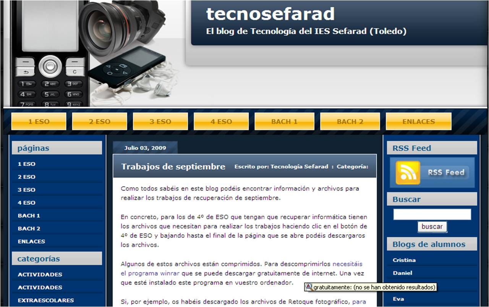

|
Las nuevas necesidades plantean internet como algo interactivo. Una página web ya no es un folleto de una empresa. El intercambio de información, noticias actuales, formularios o introducción de comentarios, son utilidades que requieren que una página se actualice continuamente.
Para su diseño se usan lenguajes basados en XML (XHTML, PHP, ASP, JSP y CSS) que permiten diseñar la estructura de la página mediante bloques de código en el que se incluyen las llamadas a distintos estilos que definen el diseño. De esta forma el contenido, que se almacena en bases de datos, se actualiza cuando la página se carga. Un ejemplo es la inserción de un calendario con la fecha actual o un tablón de noticias.
La clasificación de las páginas web se hace en función de su diseño y estructura, pudiendo ser estática o dinámicas. |
|
|
Img 11. XML Imagen de Wikipedia con licencia Creative Commons |
1.2. Tipos de páginas web
Actividad
|
Estos contenidos pueden contener elementos animados como gifs, banners, incluso vídeos y otros elementos multimedia. Sin embargo, sólo se actualizan
cambiando el código HTML. Por ello, no permiten al desarrollador ni al usuario versatilidad en el diseño.
Una mejora de estas páginas es la inclusión de elementos FLASH animados, que mejoran la apariencia y el diseño. |
|
|
Img 12. Página web del ies-juanelo-turriano |
Objetivos
|
Seguro que cuando has visitado una página web se ha abierto automáticamente una ventana con publicidad en forma de animación de otro producto.
También habrás encontrado animaciones en páginas de juegos o en la página de presentación de la mayoría de empresas.
Estas animaciones están hechas con Flash, una aplicación de la empresa Adobe Systems compatible con todos los sistemas operativos. |
|
|
Img 13. Logo de Flash Imagen de Wikipedia con licencia Creative Commons |
Te proponemos que investigues un poco.
- ¿Qué extensión tienen los archivos de Flash?
- ¿Qué programa se utiliza para crear animaciones Flash?
- ¿Qué elementos se crean con Flash?
Actividad
| PÁGINAS WEB DINÁMICAS |
|||
|
Portal.- es un sitio web con una página de presentación desde la que se accede al resto de servicios. Suele incluir acceso a correo electrónico, chats, foros, buscadores, acceso a zonas privadas, noticias de actualidad.
|
Tienda virtual.- el comercio on-line se realiza por medio de páginas "seguras" que muestran un candado y permiten el pago mediante distintas modalidades. La seguridad, la actualización del catálogo de productos y el diseño llamativo y funcional son los aspectos básicos de este tipo de páginas. | Weblogs y Bitácoras.- son diarios en los que el autor actualiza los contenidos dentro de una plantilla y el resto de usuarios puede añadir comentarios. Los elementos multimedia (imágenes y vídeo) suelen ser un elemento prioritario. | |
|
Img 14.
|
Img 15. Tienda virtual
|
 Img 16. Blog |
|
|
La actualización de estas páginas dinámicas necesita una aplicación que permita al autor o autora introducir y actualizar los contenidos de forma sencilla y sin necesidad de acceder al código fuente.
Estas aplicaciones son los gestores de contenido.
|
Img 17. Gestor de contenidos
|
||